1 nginx负载均衡高可用
1.1 什么是负载均衡高可用
nginx作为负载均衡器，所有请求都到了nginx，可见nginx处于非常重点的位置，如果nginx服务器宕机后端web服务将无法提供服务，影响严重。
为了屏蔽负载均衡服务器的宕机，需要建立一个备份机。主服务器和备份机上都运行高可用（High Availability）监控程序，通过传送诸如“I am alive”这样的信息来监控对方的运行状况。当备份机不能在一定的时间内收到这样的信息时，它就接管主服务器的服务IP并继续提供负载均衡服务；当备份管理器又从主管理器收到“I am alive”这样的信息时，它就释放服务IP地址，这样的主服务器就开始再次提供负载均衡服务。1.2 keepalived+nginx实现主备
1.2.1 什么是keepalived
keepalived是集群管理中保证集群高可用的一个服务软件，用来防止单点故障。
Keepalived的作用是检测web服务器的状态，如果有一台web服务器死机，或工作出现故障，Keepalived将检测到，并将有故障的web服务器从系统中剔除，当web服务器工作正常后Keepalived自动将web服务器加入到服务器群中，这些工作全部自动完成，不需要人工干涉，需要人工做的只是修复故障的web服务器。1.2.2 keepalived工作原理
keepalived是以VRRP协议为实现基础的，VRRP全称Virtual Router Redundancy Protocol，即虚拟路由冗余协议。
虚拟路由冗余协议，可以认为是实现路由器高可用的协议，即将N台提供相同功能的路由器组成一个路由器组，这个组里面有一个master和多个backup，master上面有一个对外提供服务的vip（VIP = Virtual IP Address，虚拟IP地址，该路由器所在局域网内其他机器的默认路由为该vip），master会发组播，当backup收不到VRRP包时就认为master宕掉了，这时就需要根据VRRP的优先级来选举一个backup当master。这样的话就可以保证路由器的高可用了。
keepalived主要有三个模块，分别是core、check和VRRP。core模块为keepalived的核心，负责主进程的启动、维护以及全局配置文件的加载和解析。check负责健康检查，包括常见的各种检查方式。VRRP模块是来实现VRRP协议的。详细参考：Keepalived权威指南中文.pdf
1.2.3 keepalived+nginx实现主备过程
1.2.3.1 初始状态
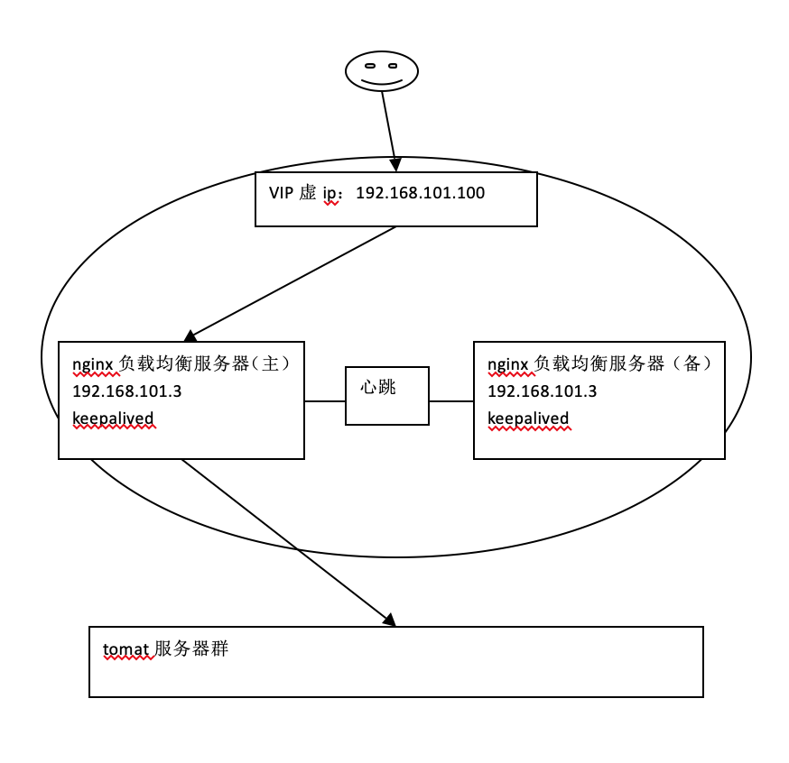
1.2.3.2 主机宕机
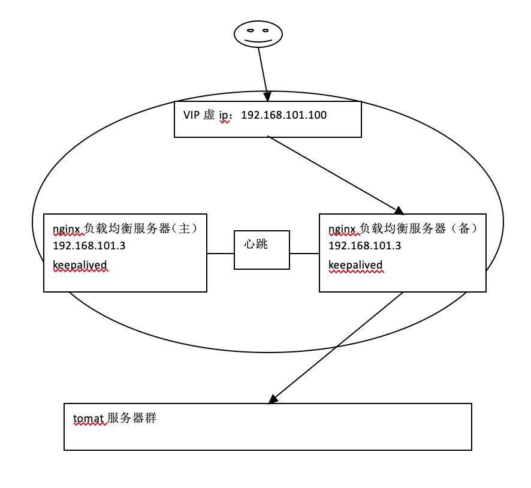
1.2.3.3 主机恢复
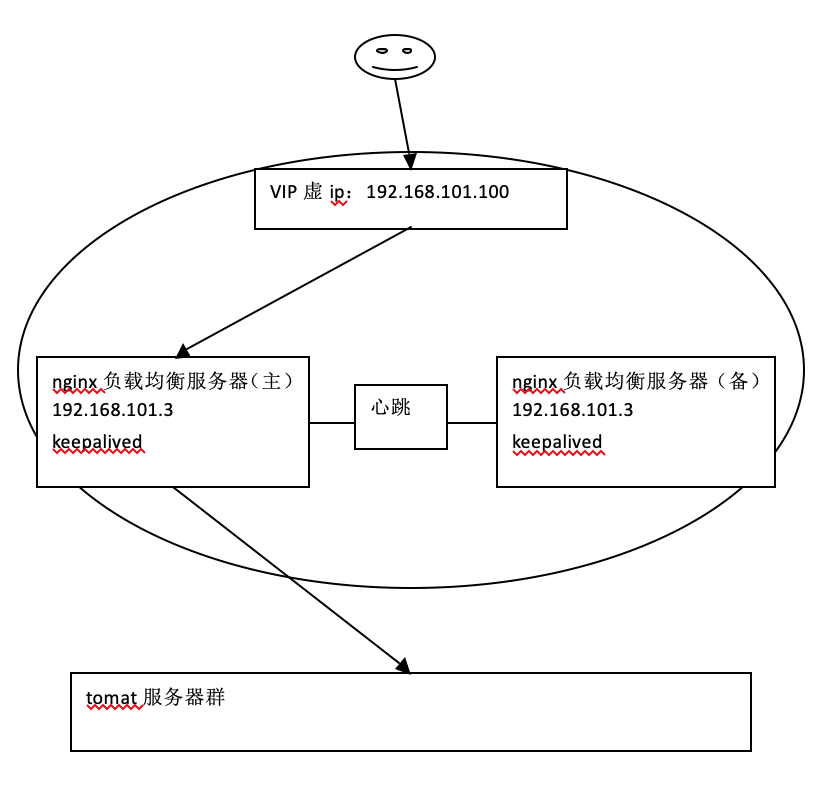
1.2.4 高可用环境
两台nginx，一主一备：192.168.101.3和192.168.101.4
两台tomcat服务器：192.168.101.5、192.168.101.6
1.2.5 安装keepalived
分别在主备nginx上安装keepalived，参考“安装手册”进行安装：安装手册 的链接。
1.2.6 配置keepalived
1.2.6.1 主nginx
修改主nginx下/etc/keepalived/keepalived.conf文件
! Configuration File for keepalived
1 | #全局配置 |
1.2.6.2 备nginx
修改备nginx下/etc/keepalived/keepalived.conf文件
配置备nginx时需要注意：需要修改state为BACKUP , priority比MASTER低，virtual_router_id和master的值一致
! Configuration File for keepalived
1 | #全局配置 |
1.2.7 测试
主备nginx都启动keepalived及nginx。
1 | service keepalived start |
1.2.7.1 初始状态
查看主nginx的eth0设置：
vip绑定在主nginx的eth0上。
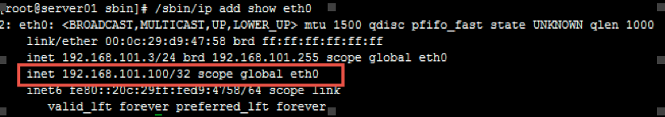
查看备nginx的eth0设置：
vip没有绑定在备nginx的eth0上。
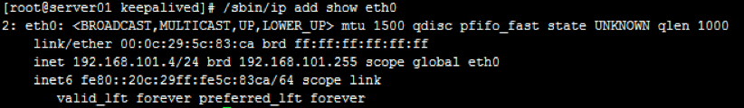
访问ccc.test.com，可以访问。
1.2.7.2 主机宕机
将主nginx的keepalived停止或将主nginx关机(相当于模拟宕机)，查看主nginx的eth0：
eth0没有绑定vip
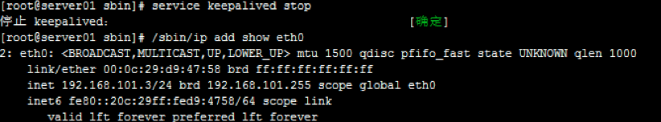
注意这里模拟的是停止 keepalived进程没有模拟宕机，所以还要将nginx进程也停止表示主nginx服务无法提供。
查看备nginx的eth0：
vip已经漂移到备nginx。
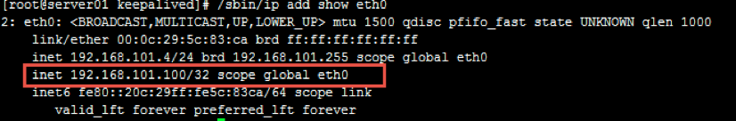
访问ccc.test.com，可以访问。
1.2.7.3 主机恢复
将主nginx的keepalived和nginx都启动。
查看主nginx的eth0：
查看备nginx的eth0：
vip漂移到主nginx。
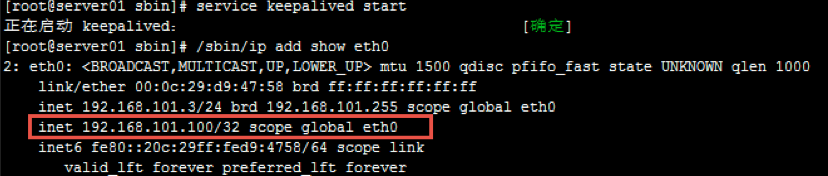
查看备nginx的eth0：
eth0没有绑定vip
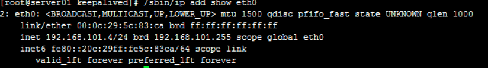
访问：ccc.test.com，正常访问。
注意：主nginx恢复时一定要将nginx也启动（通常nginx启动要加在开机启动中），否则即使vip漂移到主nginx也无法访问。
1.2.8 解决nginx进程和keepalived不同时存在问题
1.2.8.1 问题描述
keepalived是通过检测keepalived进程是否存在判断服务器是否宕机，如果keepalived进程在但是nginx进程不在了那么keepalived是不会做主备切换，所以我们需要写个脚本来监控nginx进程是否存在，如果nginx不存在就将keepalived进程杀掉。1.2.8.2 nginx进程检测脚本
在主nginx上需要编写nginx进程检测脚本（check_nginx.sh），判断nginx进程是否存在，如果nginx不存在就将keepalived进程杀掉，check_nginx.sh内容如下：1 | #!/bin/bash |
将check_nginx.sh拷贝至/etc/keepalived下，
脚本测试：
将nginx停止，将keepalived启动，执行脚本：
1 | sh /etc/keepalived/check_nginx.sh |
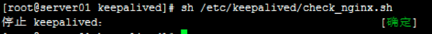
从执行可以看出自动将keepalived进程kill掉了。
1.2.8.3 修改keepalived.conf
修改主nginx的keepalived.conf，添加脚本定义检测：
注意下边红色标识地方：
1 | #全局配置 |
修改后重启keepalived
1.2.8.4 测试
回到负载均衡高可用的初始状态，保证主、备上的keepalived、nginx全部启动。
停止主nginx服务
观察keepalived日志：
1 | tail -f /var/log/keepalived.log |
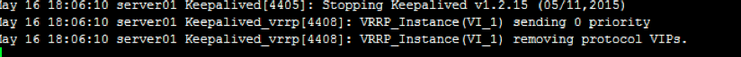
查看keepalived进程已经不存在。
查看eth0已经没有绑定vip。